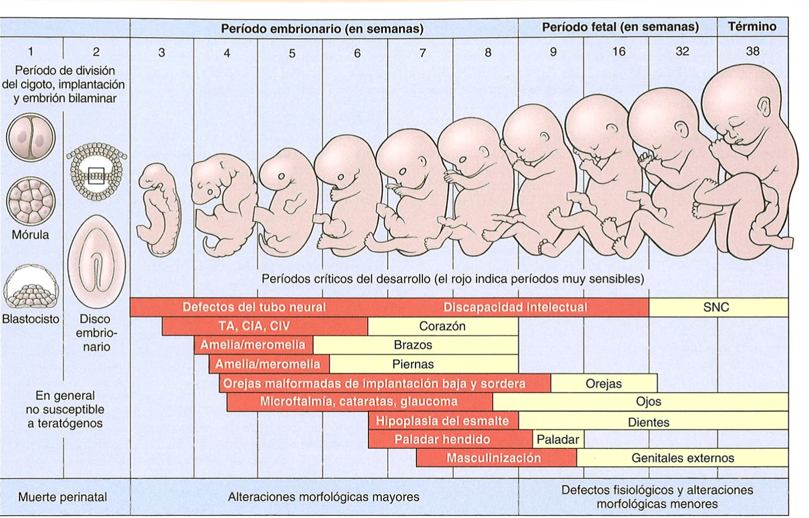
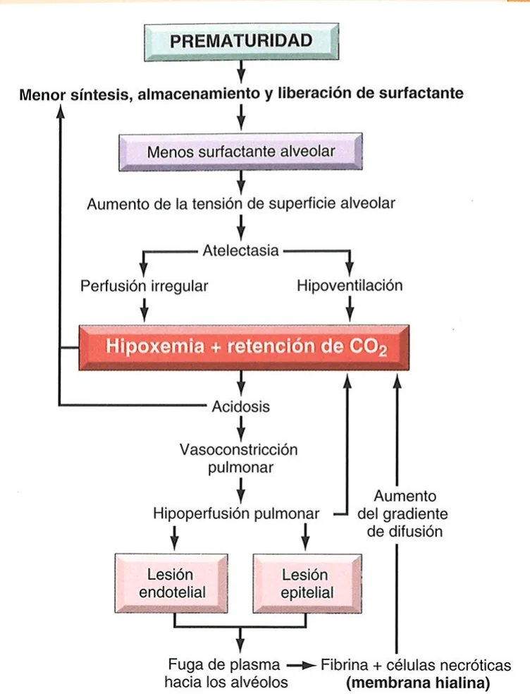
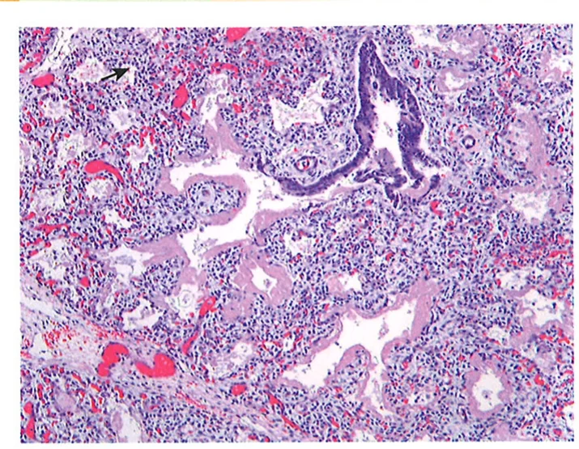
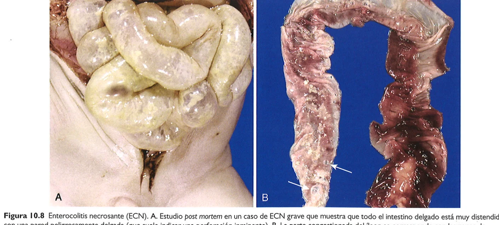
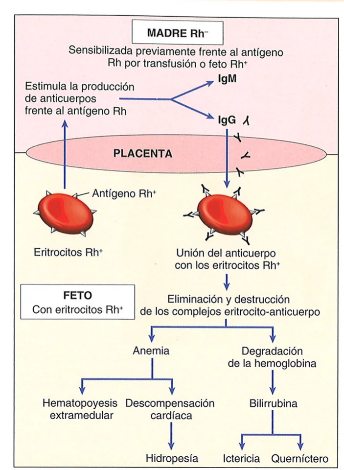
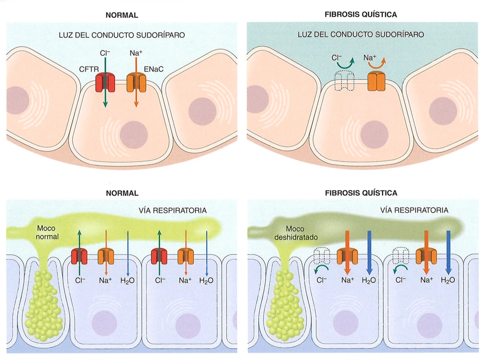

Qué cubre esta guía
Este resumen del Certamen 1 se redactó antes de adoptar la cita por página; se publica sin reescribirlo. El Manual del Certamen 1 incluye el índice tema-clase-Robbins y las fuentes.
Lo esencial en 60 segundos
- Malformación (intrínseca) ≠ disrupción (destrucción extrínseca) ≠ deformación (compresión mecánica); secuencia = cascada desde un defecto único (Potter); síndrome = constelación con causa única.
- Ventana teratógena máxima: semanas 3-9 (organogenia); en periodo fetal predominan retraso del crecimiento y lesión de órganos ya formados.
- Prematuridad (<37 semanas) es la segunda causa de mortalidad neonatal; complicaciones: SDR (déficit de surfactante), ECN (neumatosis intestinal), sepsis y hemorragia intraventricular.
- Hidropesía fetal: inmunitaria (Rh/ABO, kernícter, prevención con anti-D) hoy menos frecuente que la no inmunitaria (cardiopatías, cromosomopatías, anemia fetal).
- Errores metabólicos con cribado neonatal: FCN (PAH), galactosemia (GALT) y fibrosis quística (CFTR, sudor salado, F508).
- SMSL: diagnóstico de exclusión, triple riesgo, pico 2-4 meses; prevención con decúbito supino. Neuroblastoma (MYCN) y tumor de Wilms (WT1/IGF2) son los modelos tumorales.
Ideas clave
- Los niños no son adultos en miniatura: muchos procesos son propios de la edad y se agrupan en cuatro etapas: periodo neonatal (4 primeras semanas), lactancia (hasta el año), 1-4 años y 5-14 años.
- Las malformaciones congénitas son defectos anatómicos presentes al nacer; en EE. UU. afectan a 1 de cada 33 nacidos (unos 120.000 al año). Se distinguen de las disrupciones (destrucción extrínseca de un órgano ya formado, no hereditaria) y de las deformaciones (alteración de la forma por compresión mecánica, presente en el 2% de los recién nacidos).
- Una secuencia es una cascada de anomalías a partir de un defecto único (p. ej., la secuencia de Potter por oligohidramnios); un síndrome es una constelación de malformaciones que no se explica por un defecto inicial único y suele tener una causa cromosómica o infecciosa.
- El momento de la exposición al teratógeno decide el tipo de defecto: entre las semanas 3 y 9 (máximo en la 4-5) se producen malformaciones; en el periodo fetal predominan el retraso del crecimiento y las lesiones de órganos ya formados.
- La prematuridad (<37 semanas) es la segunda causa de mortalidad neonatal. Sus complicaciones típicas son el síndrome de dificultad respiratoria (déficit de surfactante), la enterocolitis necrosante, la sepsis y la hemorragia intraventricular.
- En las infecciones perinatales, la vía transcervical (ascendente) causa neumonía, sepsis y meningitis por aspiración de líquido amniótico infectado; la vía transplacentaria transmite TORCH, Listeria, Treponema y parvovirus B19 (que produce hidropesía por aplasia eritroide).
- La hidropesía fetal es la acumulación de edema y líquido en el feto. La forma inmunitaria (Rh/ABO) es hoy menos frecuente gracias a la inmunoglobulina anti-D; la no inmunitaria se debe sobre todo a malformaciones cardiovasculares, anomalías cromosómicas y anemia fetal.
- Los errores congénitos del metabolismo se manifiestan por acumulación de metabolitos tóxicos o déficit del producto; el capítulo desarrolla fenilcetonuria, galactosemia y fibrosis quística, las tres con cribado neonatal y tratamiento dietético o dirigido.
- El síndrome de muerte súbita del lactante (SMSL) es un diagnóstico de exclusión, multifactorial, explicado por el modelo de triple riesgo (lactante vulnerable + periodo crítico de desarrollo + factor estresante exógeno). La postura supina para dormir es la medida preventiva más eficaz.
- Los tumores infantiles son distintos de los del adulto: predominan los de tejidos blandos mesenquimatosos y los tumores de células azules redondas y pequeñas, muchos con capacidad de maduración o regresión espontánea. Los dos modelos del capítulo son el neuroblastoma (MYCN) y el tumor de Wilms (WT1, WT2/IGF2).
Introducción
La mortalidad infantil en EE. UU. descendió de 20 muertes por 1.000 nacidos vivos (1970) a 5,8 (2014); sigue siendo el doble en afroamericanos (11 frente a 4,9 por 1.000). En el mundo oscila entre 1,8 (Eslovenia) y 110,6 (Afganistán) por 1.000.
Durante los 12 primeros meses las principales causas de muerte son las malformaciones congénitas, la prematuridad y el bajo peso, el SMSL y las complicaciones maternas. Entre 1 y 9 años predominan las lesiones no intencionales (accidentes), seguidas de malformaciones y neoplasias malignas; entre 10 y 14 años, accidentes, neoplasias, suicidio, homicidio y malformaciones.
Malformaciones congénitas
Defectos anatómicos presentes al nacer, aunque algunas (cardiacas, renales) no den clínica hasta años después. "Congénito" significa "nacido con" y no implica ni excluye una base genética. Un 20% de los óvulos fecundados tienen alteraciones tan graves que se eliminan en las primeras fases; las malformaciones de los nacidos vivos son las menos graves porque son compatibles con la vida.
Definiciones
| Término | Mecanismo | Herencia / recurrencia |
|---|---|---|
| Malformación | Error intrínseco primario de la morfogenia | Puede ser génica o multifactorial |
| Disrupción | Destrucción secundaria de un órgano previamente normal (bridas amnióticas, agentes ambientales) | No hereditaria, sin riesgo aumentado en embarazos posteriores |
| Deformación | Alteración extrínseca por compresión mecánica (constricciones uterinas, oligohidramnios, fetos múltiples, presentación anómala) | 2% de los recién nacidos |
| Secuencia | Cascada de anomalías iniciada por una aberración única | No aplica |
| Síndrome malformativo | Constelación relacionada patológicamente, no explicable por un defecto inicial único | Suele deberse a una causa única (cromosómica, vírica) |
Términos por órgano: agenesia (ausencia completa del órgano y su primordio), aplasia (ausencia por fallo del crecimiento del primordio), atresia (ausencia de apertura de una víscera hueca), hipoplasia (menos células, órgano pequeño), hiperplasia (más células), hipertrofia/hipotrofia (cambio de tamaño celular sin cambio de número) y displasia (organización celular anormal; en el contexto malformativo, no neoplásico).
La secuencia de Potter (oligohidramnios) es el ejemplo clásico: la fuga crónica de líquido amniótico por rotura de membranas es la causa más frecuente; también la agenesia renal, la obstrucción urinaria fetal y la insuficiencia uteroplacentaria (hipertensión, preeclampsia grave). La compresión produce cara aplanada, alteración de la posición de manos y pies, pie zambo, luxación de cadera, hipoplasia pulmonar (que puede causar muerte fetal) y amnios nudoso.
Causas
La causa exacta sigue siendo desconocida en el 40-60% de los casos. Se agrupan en genéticas, ambientales y multifactoriales.
| Grupo | Frecuencia | Ejemplos |
|---|---|---|
| Genéticas | 10-15% | Todos los síndromes cromosómicos (Down, Turner, Klinefelter) y mutaciones mendelianas (p. ej., holoprosencefalia por pérdida de función en la vía Hedgehog) |
| Ambientales | 6-8% | Infecciones maternas (rubéola, toxoplasmosis, sífilis, CMV, VIH), enfermedades maternas (diabetes, fenilcetonuria, endocrinopatías), fármacos y drogas (alcohol, tabaco, antagonistas del folato, andrógenos, difenilhidantoína, talidomida, warfarina, ácido 13-cis-retinoico), radiación |
| Multifactoriales | 20-25% | Labio leporino, paladar hendido, defectos del tubo neural (la interacción ambiental-génica más frecuente) |
| Desconocidas | 40-60% | No aplica |
- Fármacos y químicos: la talidomida produjo malformaciones de extremidades en el 50-80% de los expuestos; el alcohol causa el síndrome alcohólico fetal (restricción del crecimiento pre- y posnatal, microcefalia, fisuras palpebrales cortas, hipoplasia maxilar, trastornos psicomotores). La nicotina no ha demostrado teratogenia, pero se asocia a abortos, parto prematuro, bajo peso y SMSL.
- Diabetes materna: 6-10% de malformaciones mayores (cardiacas, defectos del tubo neural, otras del SNC), además de hiperinsulinismo fetal con organomegalia y aumento de grasa y masa muscular.
- La rubéola fue un flagelo hasta la vacunación; hoy está virtualmente erradicada en países de ingresos altos.
- El ácido fólico periconcepcional reduce de forma espectacular los defectos del tubo neural: ejemplo de prevención de una malformación multifactorial sin eliminar los genes contribuyentes.
Patogenia
- El momento de la acción teratógena determina el tipo de defecto (fig. 10.5). En las 3 primeras semanas, el daño celular produce aborto o recuperación sin malformación. Entre la semana 3 y la 9 (máximo en la 4-5) ocurre la organogenia: es el periodo de máxima sensibilidad. En el periodo fetal predominan el retraso del crecimiento y las lesiones de órganos ya formados. Un mismo agente produce defectos distintos según el momento.
- Los teratógenos reproducen fenotipos de defectos genéticos en las mismas vías:
- Ciclopamina (lirio de maíz blanco): inhibe la vía Hedgehog y produce holoprosencefalia y ciclopía en corderos; las mutaciones de Hedgehog causan holoprosencefalia familiar.
- Ácido valproico: altera la expresión de genes HOX; las mutaciones de HOX producen malformaciones similares (miembros, vértebras, estructuras craneofaciales).
- Ácido retinoico (exceso o déficit): embriopatía con malformaciones del SNC, cardiacas y craneofaciales (labio leporino, paladar hendido); el paladar hendido de los ratones deficientes en Tgfb3 señala la vía TGF-β.

Figura 10.5. Periodos críticos del desarrollo de los distintos sistemas orgánicos y malformaciones asociadas según el momento de exposición al teratógeno. Robbins y Cotran, Patología estructural y funcional, 10ª ed., Elsevier España, 2021, p. 457. Ver créditos

Prematuridad y retraso del crecimiento fetal
La prematuridad (<37 semanas) es la segunda causa de mortalidad neonatal, tras las malformaciones congénitas. En 2016, 1 de cada 10 nacidos en EE. UU. fue prematuro; la tasa en mujeres afroamericanas (14%) supera a la de blancas (9%).
Factores de riesgo de prematuridad
| Factor | Datos clave |
|---|---|
| Rotura prematura de membranas antes del término (RPMPT) | Complica el 3% de los embarazos y es responsable de un tercio de los partos pretérmino. La RPMPT es la rotura espontánea antes de la semana 37; la RPM es cualquier rotura después de la 37. Riesgo: partos pretérmino previos, hemorragia vaginal, tabaquismo, nivel socioeconómico bajo, malnutrición. Peor pronóstico en el segundo trimestre |
| Infección intrauterina | Presente en el 25% de los partos pretérmino; a menor edad gestacional, mayor frecuencia. Correlatos histológicos: corioamnionitis y funisitis. Gérmenes: Ureaplasma urealyticum, Mycoplasma hominis, Gardnerella vaginalis (vaginosis bacteriana), Trichomonas, gonococo, Chlamydia; en países de bajos ingresos, paludismo y VIH. Los TLR desregulan prostaglandinas e inducen contracciones |
| Malformaciones uterinas, cervicales y placentarias | Fibroides, insuficiencia cervical, placenta previa, desprendimiento placentario |
| Gestación múltiple | Gemelos |
Riesgos para el recién nacido: SDR, ECN, sepsis y hemorragia intraventricular y de la matriz germinal.
Retraso del crecimiento fetal (FGR)
Al menos un tercio de los lactantes que pesan menos de 2.500 g nacen a término y son pequeños para la edad gestacional (PEG) por crecimiento fetal retrasado, no por inmadurez.
- Anomalías maternas: lo más frecuente es la reducción del flujo placentario (preeclampsia, hipertensión crónica). Factores evitables: narcóticos, alcohol, tabaquismo intenso. Fármacos: quimioterápicos, fenitoína. La malnutrición materna (hipoglucemia prolongada) también influye.
- Anomalías fetales: disminuyen intrínsecamente el potencial de crecimiento. Las alteraciones cromosómicas se encuentran hasta en el 17% de los fetos con FGR y en el 66% de los que tienen malformaciones ecográficas (triploidía 7%, trisomía 18 6%, trisomía 21 y 13 1% cada una, deleciones/translocaciones 2%). Las infecciones TORCH son la otra causa mayor. El FGR por factores fetales suele ser simétrico (proporcionado).
- Anomalías placentarias: insuficiencia uteroplacentaria por arteria umbilical única, inserción anómala del cordón, desprendimiento, placenta previa, trombosis e infartos, vellositis crónica, infecciones o gestaciones múltiples. Provocan restricción asimétrica (desproporcionada) con conservación relativa del encéfalo.
El lactante PEG tiene riesgo de disfunción cerebral, dificultades de aprendizaje y alteraciones visuales o auditivas que persisten en la infancia y la vida adulta.
Síndrome de dificultad respiratoria neonatal
También llamado enfermedad de la membrana hialina, por los depósitos de material proteico hialino en los espacios aéreos periféricos. Es la causa más frecuente de dificultad respiratoria neonatal. Otras causas: sedación materna excesiva, traumatismo craneal en el parto, aspiración de sangre o líquido amniótico e hipoxia por circular de cordón.
La incidencia es inversamente proporcional a la edad gestacional: 1% a las 37 semanas, 10,5% a las 34 y 93% en los extremadamente prematuros (≤28 semanas).
Patogenia
El defecto fundamental es la inmadurez pulmonar con déficit de surfactante. El surfactante contiene dipalmitoilfosfatidilcolina (lecitina), fosfatidilglicerol y dos grupos proteicos:
- SP-A y SP-D: glucoproteínas hidrófilas, inmunidad innata pulmonar.
- SP-B y SP-C: hidrófobas, reducen la tensión superficial en la interfase aire-líquido. Su déficit congénito (mutaciones de SFTPB o SFTPC) causa fracaso respiratorio grave.
La producción se acelera tras la semana 35. Con surfactante normal, el pulmón retiene hasta un 40% del volumen residual tras la primera respiración; sin él, los alvéolos se colapsan en cada respiración y la pared torácica blanda se deprime con el diafragma. La atelectasia progresiva y la menor distensibilidad desencadenan hipoxemia, retención de CO₂, acidosis y vasoconstricción pulmonar, con exudación de proteínas y fibrina que forma las membranas hialinas; la hipoxemia agrava el déficit de surfactante (círculo vicioso).


Los glucocorticoides aumentan el surfactante y reducen el riesgo de SDR (por eso el estrés intrauterino y el FGR protegen relativamente). La insulina suprime su síntesis, lo que explica el mayor riesgo en hijos de madres diabéticas; el parto aumenta la síntesis, por lo que la cesárea antes del inicio del trabajo de parto eleva el riesgo.
Morfología
Pulmones de tamaño normal pero sólidos, sin aire, rojo-purpúreos (como el hígado) y que se hunden en el agua. Al microscopio: alvéolos poco desarrollados y colapsados; restos necróticos en bronquiolos terminales y conductos alveolares que se incorporan a membranas hialinas eosinófilas de fibrina con restos de neumocitos tipo II. La reacción inflamatoria neutrófila es escasa. Las lesiones nunca se ven en mortinatos. Si el lactante sobrevive >48 h aparecen cambios reparativos: proliferación del epitelio alveolar bajo la membrana, descamación, fibroblastos y membrana incorporada a la pared alveolar.


Características clínicas y complicaciones
El lactante casi siempre es prematuro con peso apropiado para la edad gestacional; asociaciones con sexo masculino, diabetes materna y cesárea. Tras una reanimación inicial y unos minutos de respiración rítmica, antes de 30 minutos aparece dificultad respiratoria progresiva, cianosis, estertores finos y en la radiografía opacidades reticulogranulares uniformes ("vidrio esmerilado"). El oxígeno al 80% no mejora la situación. Si se superan los 3-4 días, el pronóstico es excelente.
Prevención: retrasar el parto, esteroides antenatales y valoración de la madurez pulmonar por fosfolípidos en líquido amniótico. La administración profiláctica de surfactante a los <28 semanas y la ventilación moderna han mejorado mucho la mortalidad.
Complicaciones:
- Retinopatía del prematuro (fibroplasia retrolental): patogenia en dos fases. En la fase hiperóxica inicial cae el VEGF y hay apoptosis endotelial; al volver a un ambiente relativamente hipóxico el VEGF aumenta y produce neovascularización retiniana.
- Displasia broncopulmonar: disminución de la tabicación alveolar (alvéolos grandes y simplificados) con capilares dismórficos; se debe a una alteración potencialmente reversible del desarrollo alveolar en la fase "sacular". Contribuyen hiperoxemia, hiperventilación, prematuridad, citocinas (TNF, IL-1β, IL-6, IL-8) y mal desarrollo vascular. El tratamiento con células madre mesenquimatosas es experimental.
- Otras: conducto arterioso persistente, hemorragia intraventricular y ECN.
Enterocolitis necrosante
Más frecuente en prematuros, con incidencia inversamente proporcional a la edad gestacional: 1 de cada 10 nacidos con muy bajo peso (<1.500 g); unos 2.500 casos anuales en EE. UU.
La patogenia es incierta y multifactorial: la prematuridad y la alimentación enteral son los factores asociados; no se ha implicado un patógeno bacteriano único (posible papel de la alteración del microbioma). El factor activador de plaquetas (PAF) aumenta la permeabilidad mucosa por apoptosis de enterocitos y alteración de uniones estrechas. La pérdida de la barrera permite translocación bacteriana, con un círculo vicioso de inflamación, necrosis y sepsis.
Clínica: heces sanguinolentas, distensión abdominal y colapso circulatorio; la radiografía muestra neumatosis intestinal (gas en la pared). Tratamiento conservador si se detecta pronto; 20-60% requieren resección de los segmentos necróticos. Alta mortalidad perinatal; los supervivientes desarrollan estenosis post-ECN por fibrosis. Se evalúan probióticos para la prevención.
Morfología: afecta sobre todo íleon terminal, ciego y colon derecho. Segmento distendido, friable, congestivo o francamente gangrenado, con perforación y peritonitis. Microscópicamente, necrosis coagulativa mucosa o transmural, ulceración, colonización bacteriana y burbujas de gas submucosas.


Infecciones perinatales
Se adquieren por dos vías: transcervical (ascendente) o transplacentaria (hematológica); a veces se combinan (el germen asciende, infecta el endometrio y alcanza la circulación fetal por las vellosidades coriales).
Infecciones transcervicales (ascendentes)
Afectan a la mayoría de las infecciones bacterianas y a algunas víricas (p. ej., herpes simple II). Se adquieren en el útero o en el parto, por aspiración de líquido amniótico infectado o al atravesar el canal del parto. El parto pretérmino es una consecuencia frecuente (por lesión o rotura del saco amniótico y por prostaglandinas de los neutrófilos). Hay corioamnionitis y funisitis, pero su gravedad no se correlaciona necesariamente con la de la infección fetal. Secuelas más frecuentes: neumonía, sepsis y meningitis.
Infecciones transplacentarias (hematológicas)
Incluyen la mayoría de las parasitarias (Toxoplasma, paludismo), las víricas y algunas bacterianas (Listeria, Treponema). La transmisión hematógena ocurre en cualquier momento de la gestación o, en la hepatitis B y el VIH, durante el parto por transfusión materno-fetal.
- Parvovirus B19: causa el eritema infeccioso ("quinta enfermedad") en niños mayores. Infecta al 1-5% de gestantes seronegativas; la mayoría tienen embarazo normal, pero puede producir aborto (segundo trimestre), mortinato, hidropesía fetal y anemia congénita. Tiene tropismo por precursores eritroides, con inclusiones intranucleares diagnósticas.
- Infecciones tempranas (TORCH) pueden dejar secuelas crónicas: retraso del crecimiento, discapacidad intelectual, cataratas, cardiopatías congénitas y defectos óseos; el cuadro clínico común incluye fiebre, encefalitis, coriorretinitis, hepatoesplenomegalia, neumonitis, miocarditis, anemia hemolítica y lesiones cutáneas.
Sepsis
Se divide en precoz (primeros 7 días, adquirida en el parto o poco después; neumonía, sepsis y a veces meningitis a los 4-5 días) y tardía (de 7 días a 3 meses). Los estreptococos del grupo B son la causa más frecuente de sepsis y de meningitis bacteriana de inicio temprano; Listeria y Candida tienen mayor latencia.
Hidropesía fetal
Acumulación de líquido de edema en el feto durante el crecimiento intrauterino. Antes predominaba la forma inmunitaria (incompatibilidad Rh); con la profilaxis, hoy es más frecuente la no inmunitaria. El espectro va del edema generalizado progresivo (que suele causar la muerte) a formas localizadas compatibles con la vida: derrame pleural o peritoneal, o líquido en la nuca (higroma quístico, típico de cariotipos 45,X).
Hidropesía inmunitaria
Enfermedad hemolítica por incompatibilidad de grupo sanguíneo madre-feto. Cuando el feto hereda antígenos eritrocitarios paternos extraños para la madre, se produce una respuesta inmunitaria materna. Los antígenos relevantes son algunos Rh (sobre todo el D) y los del sistema ABO.
Etiología y patogenia (fig. 10.10):
- Los eritrocitos fetales alcanzan la circulación materna en el último trimestre o en el parto, cuando ya no hay citotrofoblasto como barrera.
- La exposición inicial al antígeno Rh induce IgM, que no atraviesa la placenta: por eso la enfermedad Rh rara vez aparece en el primer embarazo.
- Una gestación posterior provoca una respuesta rápida de IgG, que sí cruza la placenta.
- Factores que condicionan la respuesta: el grupo ABO materno (los anticuerpos IgM anti-A/B eliminan rápido los eritrocitos fetales y protegen de la inmunización Rh) y la dosis de antígeno (se requiere hemorragia transplacentaria >1 ml de eritrocitos Rh+).
- La inmunoglobulina anti-D (RhIg) a las 28 semanas y a las 72 h del parto (y tras abortos) reduce drásticamente la isoinmunización.


La incompatibilidad ABO ocurre en el 20-25% de los embarazos, pero solo 1 de cada 10 tiene hemólisis de laboratorio y 1 de cada 200 requiere tratamiento: la mayoría de los anticuerpos anti-A/B son IgM, los eritrocitos neonatales expresan poco los antígenos y otras células absorben anticuerpos. Se da casi exclusivamente en hijos A o B de madres O (algunas mujeres O tienen IgG anti-A/B sin sensibilización previa, por lo que puede afectarse el primer hijo).
Consecuencias de la hemólisis excesiva:
- Anemia progresiva, con lesiones hipóxicas hepáticas (descenso de proteínas plasmáticas a 2-2,5 mg/dl) y cardiacas (insuficiencia). La suma de menor presión oncótica y mayor presión hidrostática produce anasarca e hidropesía.
- Ictericia por bilirrubina no conjugada, que cruza la barrera hematoencefálica inmadura y se une a lípidos del encéfalo → kernícter (lesión del SNC).
Diagnóstico y tratamiento antenatales: amniocentesis, muestreo de vellosidades coriales o sangre fetal y determinación del estado Rh fetal con ADN fetal en suero materno (gen RHD clonado). Los casos graves se tratan con transfusiones intravasculares fetales por el cordón y parto temprano.
Hidropesía no inmunitaria
Las tres causas más importantes son malformaciones cardiovasculares (estructurales o arritmias con insuficiencia cardiaca intrauterina), alteraciones cromosómicas (45,X; trisomías 21 y 18, por cardiopatías; en Turner también por alteración del drenaje linfático cervical) y anemia fetal:
- Alfa-talasemia homocigótica (deleción de los cuatro genes de α-globina): probablemente la causa más frecuente en el sudeste asiático.
- Parvovirus B19: invade normoblastos, induce apoptosis de progenitores y aplasia eritroide aislada.
- Transfusión fetofetal en embarazos gemelares monocigóticos (10% de los casos).
En el 20% la causa permanece desconocida.
Morfología y clínica
El feto y la placenta están pálidos en la hidropesía por anemia; hígado y bazo aumentados por insuficiencia cardiaca y congestión. La médula ósea muestra hiperplasia compensadora de precursores eritroides (excepción: la aplasia por parvovirus) y hay hematopoyesis extramedular en hígado, bazo, ganglios y otros tejidos. La sangre periférica tiene reticulocitos y eritroblastos (eritroblastosis fetal).
La lesión más grave es el kernícter: encéfalo aumentado, edematoso, amarillo brillante en ganglios basales, tálamo, cerebelo, sustancia gris y médula. Se suele requerir bilirrubina >20 mg/dl en el término (umbral menor en prematuros). Clínica: palidez con hepatoesplenomegalia, ictericia, edema generalizado y signos neurológicos. Tratamiento: fototerapia (oxida la bilirrubina a dipirroles hidrosolubles inocuos) y exanguinotransfusión en casos graves.
Errores congénitos del metabolismo y otros trastornos genéticos
Trastornos genéticos del metabolismo, la mayoría infrecuentes, con herencia autosómica recesiva o ligada al X (los mitocondriales son una entidad aparte). Las manifestaciones derivan de la acumulación de metabolitos anómalos o del déficit del producto.
Datos que sugieren un error congénito del metabolismo en el neonato (tabla 10.2):
| Categoría | Hallazgos |
|---|---|
| Generales | Disformismo, sordera, automutilación, pelo anormal, olor corporal o urinario anormal ("pies sudorosos", "olor a ratón", "jarabe de arce"), hepatoesplenomegalia, cardiomegalia, hidropesía |
| Neurológicas | Hipotonia o hipertonía, coma, obnubilación persistente, convulsiones |
| Digestivas | Mala ingesta, vómitos de repetición, ictericia |
| Oculares | Cataratas, mácula en rojo cereza, luxación del cristalino, glaucoma |
| Musculoarticulares | Miopatía, movilidad anormal |
Fenilcetonuria (FCN)
Afecta a 1 de cada 10.000 nacidos vivos de raza blanca. La forma clásica es frecuente en escandinavos e infrecuente en afroamericanos y judíos. Es autosómica recesiva por carencia grave de fenilalanina hidroxilasa (PAH) → hiperfenilalaninemia.
- Los lactantes son normales al nacer; en semanas aparece elevación plasmática de fenilalanina que altera el desarrollo cerebral. La discapacidad intelectual grave se hace evidente a los 6 meses. Menos del 4% de los no tratados alcanzan un CI >50-60; un tercio nunca camina y dos tercios nunca habla.
- Se asocia a convulsiones, otras alteraciones neurológicas, hipopigmentación de pelo y piel (déficit de tirosina, precursor de melanina), olor a moho (metabolitos excretados en orina y sudor) y eccema.
- Bioquímica: incapacidad de convertir fenilalanina en tirosina; el resto de la ingesta sigue vías de derivación menores. Se necesitan mutaciones en ambos alelos de PAH (>500 alelos descritos). Actividad residual hasta del 6% da enfermedad más leve; elevaciones modestas sin lesión neurológica son hiperfenilalaninemia benigna (positiva en el cribado pero sin estigmas), que se distingue midiendo fenilalanina sérica (en la FCN clásica, ≥5 veces lo normal).
- El 2% de los casos se debe a defectos de síntesis o reciclado del cofactor tetrahidrobiopterina (BH4); es importante reconocerlos porque no responden al control dietético.
- FCN materna: mujeres tratadas que abandonan la dieta en la edad adulta tienen 75-90% de hijos con discapacidad intelectual y microcefalia y 15% con cardiopatías congénitas, aunque los hijos sean heterocigotos. El efecto teratógeno depende de la fenilalanina materna, por lo que la dieta debe restringirse antes de la concepción y mantenerse todo el embarazo.
- El cribado neonatal y la restricción dietética de fenilalanina desde el inicio evitan la enfermedad.
Galactosemia
Trastorno autosómico recesivo del metabolismo de la galactosa con acumulación de galactosa-1-fosfato. Afecta a 1 de cada 60.000 nacidos vivos. La lactosa se degrada en glucosa y galactosa por la lactasa intestinal; luego la galactosa se convierte en glucosa.
- La forma más frecuente es la ausencia completa de galactosa-1-fosfato uridil transferasa (GALT). La deficiencia de galactocinasa produce una forma más leve sin discapacidad intelectual y no se comenta.
- Sin GALT, la galactosa-1-fosfato se acumula en hígado, bazo, cristalino, riñones, músculo cardiaco, corteza cerebral y eritrocitos. Las vías alternativas producen galactitol (poliol) y galactonato, responsables de la toxicidad a largo plazo. Los heterocigotos no tienen consecuencias clínicas.
- El daño principal es hepático, ocular y cerebral: hepatomegalia precoz por cambio graso que evoluciona a cicatrices difusas (seudocirrosis), cataratas por edema del cristalino inducido por galactitol, y alteraciones inespecíficas del SNC (pérdida neuronal, gliosis, edema en núcleo dentado y olivares) con retraso del crecimiento.
- Clínica: vómitos y diarrea a los pocos días de la ingesta de leche, ictericia y hepatomegalia en las primeras semanas (pueden confundirse con ictericia fisiológica), cataratas en semanas y discapacidad intelectual en 6-12 meses (menos grave que en la FCN). Aminoaciduria por alteración del transporte renal. Aumento de septicemia fulminante por Escherichia coli (menor actividad bactericida), hemólisis y coagulopatía.
- Diagnóstico: cribado neonatal por fluorimetría de GALT en sangre seca, confirmación con GALT eritrocitario; diagnóstico antenatal por GALT en amniocitos o galactitol en líquido amniótico.
- Tratamiento: eliminar la galactosa de la dieta al menos los 2 primeros años; previene cataratas y lesiones hepáticas. Aun así, los adultos pueden tener trastorno del lenguaje, insuficiencia ovárica prematura y, menos a menudo, ataxia.
Fibrosis quística (mucoviscidosis)
Trastorno hereditario del transporte de iones que afecta a la secreción de las glándulas exocrinas y al epitelio respiratorio, digestivo y reproductor. Las secreciones viscosas obstruyen los órganos y explican la neumopatía crónica, la insuficiencia pancreática, la esteatorrea, la malnutrición, la cirrosis, la obstrucción intestinal y la infertilidad masculina.
Es la enfermedad genética mortal más frecuente en caucásicos: 1 de cada 2.500 nacidos vivos, portadores 1 de cada 20 (mucho menos en afroamericanos, asiáticos e hispanos). Herencia autosómica recesiva; los heterocigotos parecen tener mayor incidencia de enfermedad pancreática y respiratoria.
La variabilidad fenotípica depende del tipo de mutación, de los efectos tisulares del producto génico y de los genes modificadores.
CFTR normal
El defecto principal es el transporte anómalo de cloro y bicarbonato por el canal codificado por CFTR en el cromosoma 7q31.2. La proteína tiene 1.480 aminoácidos, dos dominios transmembrana (seis hélices cada uno), dos dominios de unión a nucleótidos (NBD) y un dominio R con sitios de fosforilación para proteína cinasa A y C. Los agonistas elevan el AMPc, la proteína cinasa A fosforila el dominio R y la unión e hidrólisis de ATP en el NBD abren el poro.
Funciones relevantes:
- Regula otros canales, sobre todo el canal epitelial de sodio (ENaC): el CFTR normal lo inhibe.
- En los conductos sudoríparos reabsorbe cloruro y sodio; su pérdida produce sudor hipertónico (base del "sudor salado"). Es la única excepción en la que la actividad de ENaC disminuye.
- En epitelios respiratorio e intestinal secreta cloruro hacia la luz; su pérdida, junto al aumento de la reabsorción de sodio por falta de inhibición de ENaC, reabsorbe agua y deshidrata la capa de moco, con alteración mucociliar y tapones.
- Regula el transporte de bicarbonato (canal permeable y por intercambiadores SLC26). Las secreciones ácidas precipitan la mucina, favorecen tapones y la unión bacteriana; la insuficiencia pancreática aparece casi siempre con mutaciones que alteran la conductancia del bicarbonato.


Clases de mutaciones
Se han descrito más de 2.000 mutaciones; solo cinco tienen frecuencia relativa ≥1%. Las clases I-III dejan <10% de actividad residual ("graves"); las IV-VI, ≥20% ("leves").
| Clase | Defecto | Consecuencia | Ejemplos |
|---|---|---|---|
| I | Síntesis defectuosa (mutaciones anuladoras) | Fin prematuro de la traducción; ausencia completa de proteína | Gly542X, Arg553X, Trp1282X |
| II | Plegamiento y procesamiento anormales | Retención en retículo endoplásmico y degradación en el proteosoma | Phe508del (F508) en el 70% de los caucásicos |
| III | Regulación defectuosa (de compuerta) | Proteína en superficie apical pero no funcional (falla unión/hidrólisis de ATP) | Gly551Asp |
| IV | Conductancia reducida | Cantidad normal en membrana apical con función reducida | Arg117His, Arg347Pro |
| V | Producción reducida | Menos proteína normal (afecta sitios de separación de intrones/promotor) | 3849+10kbC>T, variante 5T |
| VI | Menor estabilidad de membrana | Proteína procesada y funcional pero inestable | No aplica |
Genotipo-fenotipo y modificadores
Dos mutaciones graves producen el fenotipo clásico (insuficiencia pancreática, infecciones sinopulmonares, síntomas digestivos); una mutación leve en uno o ambos alelos da un fenotipo más leve. La correlación es más constante para la enfermedad pancreática (una mutación leve con actividad residual puede revertir la insuficiencia) y mucho menos para la pulmonar, por los modificadores.
- Genes modificadores de la función neutrófila: MBL2, TGF-β1, IFRD1.
- Con la ampliación de las pruebas genéticas se reconocen fibrosis quísticas atípicas: pancreatitis crónica idiopática, enfermedad pulmonar crónica de inicio tardío, bronquiectasias "idiopáticas" y azoospermia obstructiva por ausencia bilateral del conducto deferente.
- Modificadores ambientales: la colonización crónica por Pseudomonas aeruginosa (inicialmente intermitente) es clave. El moco estático crea un microambiente hipóxico que induce la producción de alginato, con biopelícula que protege de anticuerpos y antibióticos; la respuesta inmunitaria contribuye a la destrucción pulmonar. Cerca del 80% están colonizados a los 20 años. Las infecciones víricas intercurrentes predisponen a la colonización.
Morfología
- Páncreas (85-90%): desde moco en conductos pequeños con dilatación glandular hasta tapones completos con atrofia del componente exocrino, fibrosis progresiva y persistencia de islotes en estroma fibroadiposo. La avitaminosis A contribuye a la metaplasia escamosa del conducto.
- Intestino: tapones de moco denso → íleo meconial.
- Hígado: proliferación de conductillos e inflamación portal, esteatosis y cirrosis biliar focal en un tercio; grave en <10%.
- Glándulas salivales: dilatación de conductos, metaplasia escamosa y atrofia con fibrosis.
- Pulmón (la complicación más grave): obstrucción por moco, hiperplasia de células secretoras, bronquitis crónica con bronquiectasias y abscesos. Gérmenes: Staphylococcus aureus, Haemophilus influenzae y P. aeruginosa (variante mucoide); también el complejo Burkholderia cepacia (B. cenocepacia, "síndrome por cepacia", muy difícil de tratar), Stenotrophomonas maltophilia, micobacterias no tuberculosas y aspergilosis broncopulmonar alérgica.
- Aparato reproductor: azoospermia e infertilidad en el 95% de los hombres adultos, con ausencia bilateral congénita de conductos deferentes (que puede ser el único rasgo de una mutación de CFTR).
- No hay alteración morfológica de las glándulas sudoríparas.
Clínica y diagnóstico
Clínica muy variada, desde el nacimiento hasta la edad adulta:
- 5-10% consultan al nacer por íleo meconial; la obstrucción intestinal distal en mayores da dolor recurrente en la fosa ilíaca derecha, a veces con masa e invaginación.
- Insuficiencia exocrina pancreática en 85-90% (mutaciones graves en ambos alelos); un 10-15% conserva función suficiente (fenotipo con suficiencia pancreática). Produce malabsorción de proteínas y grasas, esteatorrea, heces voluminosas y malolientes, distensión, escasa ganancia de peso, déficit de vitaminas A, D, E y K, hipoproteinemia con edema y prolapso rectal hasta en 10%. Algunos con suficiencia pancreática tienen brotes de pancreatitis aguda recurrente o pancreatitis crónica "idiopática".
- Diabetes mellitus (insuficiencia endocrina) hasta en el 50% de los adultos.
- Pólipos nasosinusales en el 10-25%.
- Hepatopatía en el 13-17%, con hepatomegalia asintomática hasta en un tercio; obstrucción del colédoco por cálculos/barro biliar; es la segunda causa de muerte tras las complicaciones cardiopulmonares y del trasplante.
- Las complicaciones cardiorrespiratorias (infecciones persistentes, enfermedad obstructiva, cor pulmonale) causan el 80% de las muertes. A los 18 años, 80% portan P. aeruginosa y 3,5% B. cepacia.
- Diagnóstico: clínica característica, antecedentes familiares, cribado neonatal anormal o electrolitos elevados en sudor persistentes (la madre suele notar el sudor salado). El cribado neonatal mide tripsinógeno inmunorreactivo. Una minoría con mutación leve puede tener sudor normal o casi (<60 mM); en ellos ayuda la diferencia de potencial transepitelial nasal. La secuenciación de CFTR es la prueba de referencia.
Tratamiento: antibióticos más potentes, enzimas pancreáticas y trasplante pulmonar bilateral. Terapias dirigidas según el defecto:
- Potenciadores: mantienen abierta la compuerta del canal (clases III y IV; también útiles en la V).
- Correctores: ayudan al plegamiento correcto y al tránsito a la superficie (clase II, incluida F508).
- Amplificadores: aumentan la cantidad de proteína fabricada (clase V).
- Para mutaciones sin sentido de clase I se desarrollan moléculas de "revisión ribosómica" de codones de parada prematuros.
- La combinación potenciador + corrector está aprobada para F508/F508. La mediana de supervivencia ha llegado a los 50 años.
Síndrome de muerte súbita del lactante (SMSL)
Definición del NICHD: muerte súbita de un lactante menor de 1 año que no se explica tras una investigación exhaustiva, con autopsia completa, valoración del lugar de la muerte e historia clínica. Muchos casos de muerte súbita tienen una causa anatómica o bioquímica que la autopsia revela (muerte súbita inesperada del lactante, MSIL); esos casos no son SMSL. El CDC estima que el SMSL es alrededor de la mitad de las MSIL. El lactante suele morir durante el sueño, sobre todo en decúbito prono o lateral ("muerte en la cuna").
Epidemiología
Es una de las principales causas de muerte entre 1 mes y 1 año y la cuarta causa global de muerte en la lactancia, tras malformaciones congénitas, prematuridad/bajo peso y complicaciones maternas. Las campañas de sueño seguro ("A dormir boca arriba"/"A dormir seguros") redujeron la mortalidad de unos 120 por 100.000 nacidos vivos (1992) a 35 por 100.000 (2017), unas 1.360 muertes anuales en EE. UU. La tasa sigue siendo más del doble en lactantes negros no hispanos (70/100.000) y nativos americanos/nativos de Alaska (77/100.000) que en blancos no hispanos (35/100.000). En el mundo, de 10/100.000 (Holanda) a 80/100.000 (Nueva Zelanda).
El 90% de las muertes ocurre en los primeros 6 meses, con pico entre los 2 y 4 meses: ventana de máxima susceptibilidad independiente de otros factores y de la geografía. La mayoría muere en casa, de noche, tras un periodo de sueño.
Morfología
Los hallazgos son sutiles, inciertos y no constantes:
- Petequias múltiples en el 80% (timo, pleura visceral y parietal, epicardio).
- Pulmones congestivos con ingurgitación vascular y/o edema (probablemente fenómenos agónicos).
- Signos histológicos de infección respiratoria alta reciente, insuficientes para explicar la muerte y que no excluyen el SMSL.
- Astrogliosis del tronco y el cerebelo; en algunos casos hipoplasia del núcleo arciforme o reducción de sus poblaciones neuronales.
- Hallazgos inespecíficos: persistencia de hematopoyesis extramedular hepática y grasa parda perisuprarrenal (posible hipoxemia crónica, retraso del desarrollo y estrés crónico).
El valor de la autopsia es descartar otras causas de MSIL (infecciones no sospechadas, malformaciones, trastornos genéticos) y los casos de malos tratos.
Patogenia
Proceso multifactorial. Modelo de triple riesgo: intersección de (1) un lactante vulnerable, (2) un periodo crítico del desarrollo del control homeostático (primeros 6 meses) y (3) un factor estresante exógeno.
- La hipótesis más atractiva es un desarrollo tardío del control del "despertar" y cardiorrespiratorio. El bulbo raquídeo responde a hipercapnia, hipoxia y estrés térmico durante el sueño; el sistema serotoninérgico (5-HT) bulbar participa en el despertar, el impulso respiratorio, la presión arterial y los reflejos de la vía aérea superior. Alteraciones de la señalización serotoninérgica pueden ser la base en algunos casos.
- Factores de vulnerabilidad: prematuridad y bajo peso (riesgo creciente al disminuir edad gestacional o peso), sexo masculino, SMSL en un hermano (riesgo ×5, con predisposición genética; descartar malos tratos), antecedente de infección respiratoria leve reciente (sin germen único) y polimorfismos de la señalización serotoninérgica y la inervación autónoma.
- Los quimiorreceptores laríngeos se han propuesto como "eslabón perdido": su activación induce un reflejo cardiorrespiratorio inhibidor, y su estimulación aumenta con las secreciones de las infecciones y con la posición prono (que altera la deglución y la limpieza de la vía aérea).
- Tabaco materno durante la gestación: más del doble de riesgo. Edad materna joven, partos frecuentes y cuidado prenatal inadecuado también aumentan la incidencia.
- Factores ambientales modificables: decúbito prono o lateral, dormir en superficie blanda, compartir cama los primeros 3 meses e hipertermia. La postura lateral no es una alternativa fiable: la American Academy of Pediatrics acepta solo el decúbito supino.
El diagnóstico es por exclusión, con estudio del lugar y autopsia completa; esta revela causas inesperadas en hasta el 20% o más de los casos. Las infecciones (miocarditis vírica, bronconeumonía) son las causas más frecuentes de muerte "inesperada", seguidas de malformaciones no sospechadas. Entre las causas genéticas destacan el QT prolongado (SCN5A, KCNQ1), los trastornos de la oxidación de ácidos grasos (MCAD, LCHAD, SCHAD; hasta un 5% de las MSIL), la miocardiopatía histiocitoide (MTCYB) y las deleciones parciales de C4a/C4b.
Tumores y lesiones seudotumorales en lactantes y niños
Solo un 2% de los tumores malignos aparecen en la lactancia o infancia, pero el cáncer (incluida la leucemia) representa el 16% de las muertes entre 5 y 14 años en EE. UU.; solo los accidentes causan más. Los tumores benignos son aún más frecuentes que los cánceres y la mayoría preocupa poco. A veces es difícil distinguir morfológicamente un tumor de una lesión seudotumoral.
Lesiones seudotumorales
- Heterotopia (coristoma): tejido normal desde el punto de vista microscópico en una localización anormal (resto pancreático en pared gástrica o intestinal; células suprarrenales en pulmón, riñón u ovario). Rara vez originan neoplasias verdaderas, pero se confunden con ellas.
- Hamartoma: sobrecrecimiento focal de células y tejidos nativos del órgano, maduros pero sin reproducir la arquitectura normal. La distinción con una neoplasia benigna es poco nítida (ambas pueden ser clonales). Se consideran hamartomas o neoplasias según el autor: hemangiomas, linfangiomas, rabdomiomas cardiacos, adenomas hepáticos, quistes intrarrenales, pulmonares o pancreáticos. Su histología benigna no impide complicaciones graves.
Tumores benignos
En el niño puede aparecer casi cualquier tumor, pero destacan hemangiomas, lesiones fibrosas y teratomas. Las neoplasias más frecuentes son de tejidos blandos mesenquimatosos, a diferencia del adulto, donde predominan las epiteliales.
Hemangiomas: los tumores más frecuentes en lactantes. Morfológicamente iguales a los del adulto (cavernosos y capilares; estos últimos más celulares, lo que no debe alarmar). Afectan sobre todo piel de cara y cuero cabelludo, con masas rojo-azuladas planas o elevadas; las placas extensas se llaman manchas en vino de Oporto. Pueden crecer con el niño y muchos regresan espontáneamente. Algunos forman parte de la enfermedad de von Hippel-Lindau; un subgrupo de hemangiomas cavernosos del SNC es familiar (KRIT1, CCM2, PDCD10).
Tumores fibrosos: desde proliferaciones poco celulares de células fusiformes (fibromatosis) hasta lesiones muy celulares indistinguibles del fibrosarcoma adulto (fibrosarcoma congénito del lactante). La histología no predice el comportamiento: las variantes congénitas tienen pronóstico excelente. Se describe la translocación t(12;15)(p13;q25) con transcrito de fusión ETV6-NTRK3 (tirosina cinasa activada constitutivamente, vías RAS-MAPK y PI3K/AKT), útil para el diagnóstico.
Teratomas: muestran la relación entre madurez histológica y comportamiento. Pueden ser maduros benignos y quísticos, inmaduros de potencial maligno indeterminado o francamente malignos (a menudo con componente de tumor de células germinativas, como el tumor del saco vitelino). Dos picos de incidencia: 2 años y final de la adolescencia/adulto joven. Los sacrococcígeos son los más frecuentes en la infancia (40% o más), con incidencia de 1/20.000-40.000 nacidos vivos y afectación 4 veces mayor en niñas.
- El 10% se asocia a malformaciones congénitas (intestino posterior, cloaca, defectos de la línea media como meningocele o espina bífida), que no son consecuencia del efecto local del tumor.
- 75% son maduros, 12% malignos y mortales, el resto inmaduros; la malignidad se correlaciona con la cantidad de tejido inmaduro, sobre todo neuroepitelial.
- Los benignos afectan a lactantes pequeños (<4 meses); los malignos, a niños mayores.
- Otras localizaciones: testículo, ovario, mediastino, retroperitoneo, cabeza y cuello.
Tumores malignos
Los cánceres infantiles difieren biológica e histológicamente de los del adulto:
- Incidencia y tipo de tumor distintos.
- Relación frecuente entre alteración del desarrollo (teratogenia) e inducción tumoral (oncogenia).
- Prevalencia de alteraciones genéticas familiares subyacentes.
- Tendencia de los tumores neonatales y fetales a regresar o madurar espontáneamente.
- Mayor supervivencia, con atención creciente a los efectos adversos tardíos del tratamiento y a las segundas neoplasias.
Los cánceres más frecuentes se originan en el sistema hematopoyético, el tejido nervioso (SNC, simpático, médula suprarrenal y retina), tejidos blandos, huesos y riñones, a diferencia del adulto (piel, pulmón, mama, próstata, colon). La leucemia causa por sí sola más muertes en menores de 15 años que todos los demás tumores juntos.
Muchas neoplasias pediátricas no hematopoyéticas son únicas, con aspecto indiferenciado primitivo (embrionario), láminas de células con núcleos pequeños redondeados y rasgos de organogenia del órgano de origen; de ahí el sufijo -blastoma (nefroblastoma/tumor de Wilms, hepatoblastoma, neuroblastoma). Se agrupan como tumores de células azules redondas y pequeñas: neuroblastoma, tumor de Wilms, linfoma, rabdomiosarcoma, sarcoma de Ewing/tumor neuroectodérmico primitivo, meduloblastoma y retinoblastoma. El diagnóstico puede requerir cariotipo, inmunohistoquímica o microscopia electrónica.
Neoplasias malignas más frecuentes por edad (tabla 10.5):
| 0-4 años | 5-9 años | 10-14 años |
|---|---|---|
| Leucemia, retinoblastoma, neuroblastoma, tumor de Wilms, hepatoblastoma, sarcoma de tejidos blandos, teratoma, tumores del SNC | Leucemia, neuroblastoma, hepatocarcinoma, sarcoma de tejidos blandos, sarcoma de Ewing, tumores del SNC, linfoma (incluido Hodgkin) | Leucemia, carcinoma de células renales, hepatocarcinoma, sarcoma de tejidos blandos, sarcoma de Ewing, osteosarcoma, tumores del SNC, linfoma, carcinoma de tiroides |
Tumores neuroblásticos
Derivan de las células primordiales de la cresta neural de los ganglios simpáticos y la médula suprarrenal. El neuroblastoma es el tumor sólido extracraneal más frecuente en niños y la neoplasia maligna más diagnosticada en la lactancia: 1 de cada 7.000 nacidos vivos, unos 700 casos anuales en EE. UU., mediana de edad 18 meses y 40% en lactantes.
La mayoría son esporádicos; 1-2% familiares (pueden afectar ambas suprarrenales o múltiples órganos autónomos). Las mutaciones germinales de ALK son causa fundamental de predisposición familiar, y las mutaciones somáticas con ganancia de función de ALK aparecen en el 10% de los esporádicos. El pronóstico de los subgrupos de alto riesgo sigue siendo reservado (supervivencia a 5 años ~40%); los menores de 18 meses tienen mejor pronóstico para una carga tumoral similar.
Morfología
- Localización: 40% médula suprarrenal; 25% paravertebral abdominal; 15% mediastino posterior; también pelvis, cuello y encéfalo.
- Tamaño desde nódulos diminutos (lesiones in situ, 40 veces más frecuentes que los tumores clínicos, la mayoría regresan dejando calcificación o fibrosis) hasta masas >1 kg. Algunos tienen seudocápsula; otros infiltran riñón, vena renal, cava y rodean la aorta. Al corte, tejido grisáceo oscuro blando con necrosis, quistes y hemorragia; puede haber calcificación puntiforme.
- Histología: células primitivas pequeñas de núcleos oscuros, escaso citoplasma y límites mal definidos, en láminas sólidas (difíciles de distinguir de otros tumores de células redondas azules). Cariorrexis, pleomorfismo y mitosis. Fondo de material eosinófilo fibrilar (neurópilo, prolongaciones neuríticas) y seudorrosetas de Homer-Wright (células concéntricas alrededor de un espacio con neurópilo). Inmunohistoquímica: enolasa neuronal específica y PHOX2B.
- Maduración: células ganglionares grandes mezcladas con neuroblastos (ganglioneuroblastoma) y lesiones con predominio de células ganglionares maduras y pocos o ningún neuroblasto (ganglioneuroma), con aparición de células de Schwann. El estroma schwanniano puede albergar alteraciones genéticas del tumor (parte del clon) y su presencia se asocia a pronóstico favorable (se requieren ≥50% para clasificar como ganglioneuroblastoma/ganglioneuroma).
- Metástasis precoces y extensas: infiltración local y ganglionar, diseminación hematógena a hígado, pulmones, médula ósea y huesos.

Estadificación (INSS): 1 (localizado resecado), 2A (resección incompleta, ganglios homolaterales negativos), 2B (ganglios homolaterales positivos, contralaterales negativos), 3 (irresecable que cruza la línea media o ganglios contralaterales), 4 (diseminación a ganglios distantes, hueso, médula, hígado, piel u otros órganos) y 4S (tumor localizado con metástasis limitadas a piel, hígado y/o médula <10%, solo en lactantes <1 año). El 60-80% se diagnostica en estadio 3 o 4.
Clínica: en menores de 2 años, gran masa abdominal, fiebre y adelgazamiento; en mayores, síntomas de metástasis (dolor óseo, respiratorio, digestivo). Puede haber proptosis y equimosis por metástasis periorbitarias y, en neonatos, metástasis cutáneas con decoloración azul ("bebé en magdalena de arándanos"). El 90% produce catecolaminas, con aumento de ácido vainillilmandélico (AVM) y homovanílico (AHV) urinarios; la hipertensión es mucho menos frecuente que en el feocromocitoma. Los ganglioneuromas suelen ser masas asintomáticas o compresivas.
Factores pronósticos (tabla 10.7):
| Variable | Favorable | Desfavorable |
|---|---|---|
| Estadio | 1, 2A, 2B, 4S | 3, 4 |
| Edad | <18 meses | >18 meses |
| Histología | Con estroma schwanniano y diferenciación ganglionar | Ausente |
| Índice mitosis-cariorrexis | <200/5.000 células | >200/5.000 |
| Ploidía | Hiperdiploide (ganancias completas) | Casi diploide (pérdidas segmentarias, cromotripsis) |
| MYCN | No amplificado | Amplificado |
| 1p / 11q | Sin pérdida | Pérdida |
| TRKA / TRKB | TRKA presente | TRKB presente / TRKA ausente |
| Genes de neuritogenia | Sin mutaciones | Mutados |
La amplificación de MYCN (20-30% de los tumores primarios) condiciona alto riesgo independientemente de edad, histología o estadio; se localiza en 2p23-p24 y se manifiesta como cromosomas dobles diminutos o regiones de tinción homogénea. La deleción de 1p36 (25-35%) se correlaciona con MYCN amplificado, estadio avanzado y recaída; la pérdida de 11q también es adversa, pero no se asocia a MYCN. La cromotripsis puede amplificar MYCN u otros oncogenes o perder loci supresores. Se investigan retinoides para inducir diferenciación e inhibidores de ALK.
Tumor de Wilms (nefroblastoma)
Tumor renal primario más frecuente en la infancia y cuarto tumor maligno pediátrico en EE. UU.: 1 de cada 10.000 niños, incidencia máxima a los 2-5 años y 95% antes de los 10. Un 5-10% son bilaterales (sincrónicos o metacrónicos), con edad mediana unos 10 meses menor, lo que sugiere mutación germinal predisponente. La supervivencia pasó del 30% a cerca del 90%.
Patogenia y genética (tres síndromes; no más del 10% de los casos):
| Síndrome | Locus/gen | Rasgos | Riesgo de tumor de Wilms |
|---|---|---|---|
| WAGR | Deleción constitucional 11p13: WT1 y PAX6 | Tumor de Wilms, aniridia, malformaciones genitourinarias, discapacidad intelectual | ~33% a lo largo de la vida (primer golpe = deleción germinal; segundo golpe = mutación del otro alelo de WT1) |
| Denys-Drash | Mutación dominante negativa en el dedo de zinc de WT1 | Disgenesia gonadal (seudohermafroditismo masculino) y nefropatía precoz con esclerosis mesangial difusa; riesgo de gonadoblastoma | ~90% (requiere inactivación de ambos alelos) |
| Beckwith-Wiedemann | 11p15.5 (locus WT2), impronta | Organomegalia, macroglosia, hemihipertrofia, onfalocele, citomegalia suprarrenal | Aumentado |
Las deleciones limitadas a PAX6 con WT1 normal causan aniridia sin aumento del riesgo tumoral. WT1 codifica un factor de transcripción que se une al ADN y se expresa en riñón y gónadas durante la embriogenia; según el contexto, activa o reprime la transcripción (dianas: proteínas de podocitos y genes de diferenciación renal). Solo un 10% de los tumores esporádicos tienen mutaciones de WT1.
En el SBW, la base es la alteración de la impronta: normalmente solo se expresa el alelo paterno de IGF2 y el materno está silenciado; la pérdida de impronta (reexpresión del alelo materno) o la disomía paterna uniparental sobreexpresan IGF2, factor de crecimiento embrionario que explica el sobrecrecimiento y el riesgo tumoral.
En los tumores esporádicos (90%): mutaciones con ganancia de función de β-catenina (~10%) y mutaciones de genes del procesamiento de miARN (DROSHA, DGCR8, DICER1; 15-20% de los de histología blastémica), que reducen miARN maduros (familia mir-200, implicada en la transición mesenquimatosa-epitelial de la morfogenia renal) y explicarían la persistencia de restos de blastema. Las mutaciones de TP53 se asocian a anaplasia y mal pronóstico.
Morfología
- Masa bien delimitada, grande y solitaria; 10% bilaterales o multicéntricos al diagnóstico. Al corte, grisácea o parda, blanda y homogénea, con focos de necrosis, quistes o hemorragia.
- Histología: imita los estadios de la nefrogenia, con la clásica combinación trifásica de blastema (láminas de células azules pequeñas), epitelio (túbulos o glomérulos abortivos) y estroma (fibroblástico o mixoide, a veces músculo esquelético; rara vez epitelio escamoso o mucinoso, músculo liso, grasa, cartílago, osteoide o tejido neurógeno).
- Anaplasia en ~5%: núcleos hipercromáticos, grandes y pleomorfos con mitosis anormales; se correlaciona con TP53 y resistencia a la quimioterapia.
- Restos nefrógenos: lesión precursora en el 25-40% de los unilaterales y casi el 100% de los bilaterales; comparten alteraciones genéticas con el tumor adyacente. Van de masas hiperplásicas a restos escleróticos con túbulos o glomérulos inmaduros. Su presencia implica riesgo de tumor contralateral y controles prolongados.

Clínica y pronóstico: gran masa abdominal (puede cruzar la línea media hacia la pelvis), hematuria, dolor tras traumatismo, obstrucción intestinal e hipertensión; con frecuencia hay metástasis pulmonares al diagnóstico. La mayoría se cura.
- La histología anaplásica es el determinante más importante de mal pronóstico; incluso la anaplasia limitada al riñón aumenta recaídas y muerte.
- Parámetros moleculares adversos: pérdida de heterocigosidad de 1p y 16q y ganancia de 1q.
- Al aumentar la supervivencia se describe un mayor riesgo de segundas neoplasias (sarcomas de tejidos blandos o hueso, leucemias, linfomas, carcinomas de mama), unas por mutaciones germinales predisponentes y otras por el tratamiento, sobre todo radioterapia en el lecho tumoral.
Puntos de examen
- Malformación (intrínseca, puede ser hereditaria) ≠ disrupción (destrucción extrínseca, no hereditaria, p. ej. bridas amnióticas) ≠ deformación (compresión mecánica, 2% de recién nacidos). Secuencia = cascada desde un defecto único (Potter/oligohidramnios); síndrome = constelación con causa única.
- Causas de malformaciones: 40-60% desconocidas; multifactoriales 20-25%; genéticas 10-15%; ambientales 6-8% (diabetes 6-10% de malformaciones mayores; alcohol → síndrome alcohólico fetal; talidomida → defectos de extremidades en 50-80%).
- El periodo de máxima sensibilidad teratógena es la semana 3-9 (máximo 4-5); en el periodo fetal predominan retraso del crecimiento y lesiones de órganos formados. Ciclopamina (Hedgehog) → holoprosencefalia/ciclopía; valproico (HOX); retinoico (TGF-β).
- Prematuridad (<37 semanas): segunda causa de mortalidad neonatal; causas: RPMPT (3% de embarazos, un tercio de los partos pretérmino), infección intrauterina (25%), anomalías uterinas/cervicales/placentarias, gemelos. Complicaciones: SDR, ECN, sepsis, hemorragia intraventricular.
- FGR simétrico → causa fetal (cromosomopatía, TORCH); asimétrico con conservación del encéfalo → causa placentaria/uteroplacentaria.
- SDR: déficit de surfactante (lecitina/DPPC, SP-B y SP-C); incidencia 1% a las 37 semanas y 93% a ≤28; membranas hialinas de fibrina; vidrio esmerilado; tratamiento con esteroides antenatales y surfactante; complicaciones: retinopatía del prematuro (VEGF bifásico) y displasia broncopulmonar.
- ECN: 1/10 nacidos <1.500 g; íleon terminal, ciego y colon derecho; neumatosis intestinal; PAF; 20-60% requieren cirugía; estenosis post-ECN.
- Infección ascendente → neumonía, sepsis, meningitis por aspiración; transplacentaria → TORCH, Listeria, Treponema; parvovirus B19 → aplasia eritroide, hidropesía, inclusiones en precursores eritroides.
- Sepsis precoz (<7 días): estreptococo del grupo B; tardía (7 días-3 meses): Listeria, Candida, otros.
- Hidropesía inmunitaria: Rh(D); IgM en la primera exposición (no cruza placenta, rara en el primer embarazo), IgG en las siguientes; RhIg a las 28 semanas y 72 h posparto; consecuencias: anemia → insuficiencia cardiaca y anasarca, e ictericia → kernícter (>20 mg/dl en el término). ABO: madres O con hijos A o B, mucho más leve.
- Hidropesía no inmunitaria: cardiopatías, cromosomopatías (45,X; trisomías 21 y 18), anemia fetal (alfa-talasemia, parvovirus, transfusión fetofetal); 20% idiopática. Manejo del kernícter: fototerapia y exanguinotransfusión.
- FCN: 1/10.000, autosómica recesiva, déficit de PAH, hiperfenilalaninemia ≥5 veces lo normal, discapacidad intelectual a los 6 meses, hipopigmentación, olor a moho, eccema; 2% por déficit de BH4 (no responde a dieta); FCN materna (75-90% de hijos afectados).
- Galactosemia: 1/60.000, déficit de GALT, galactosa-1-fosfato y galactitol; ictericia, hepatomegalia, cataratas, discapacidad intelectual, sepsis por E. coli; tratamiento sin galactosa.
- Fibrosis quística: 1/2.500 caucásicos, CFTR 7q31.2; F508 (clase II) en 70%; clases I-III graves (<10% de función) y IV-VI leves (≥20%); sudor >60 mM de cloro, cribado con tripsinógeno inmunorreactivo; insuficiencia pancreática 85-90%, íleo meconial 5-10%, azoospermia obstructiva 95% de los hombres, P. aeruginosa 80% a los 20 años; potenciadores, correctores y amplificadores.
- SMSL: <1 año, diagnóstico de exclusión con autopsia; 90% en los primeros 6 meses (pico 2-4); triple riesgo; petequias en el 80%; factores clave: decúbito prono/lateral, tabaco materno, superficie blanda, compartir cama, hipertermia; prevención con decúbito supino.
- Tumores infantiles: predominan mesenquimatosos y de células azules redondas y pequeñas; relación teratogenia-oncogenia; regresión/maduración espontánea; leucemia es la causa más frecuente de muerte por cáncer.
- Neuroblastoma: 1/7.000, mediana 18 meses, 40% suprarrenal; catecolaminas (AVM/AHV); seudorrosetas de Homer-Wright y neurópilo; MYCN amplificado (20-30%) = alto riesgo; deleción 1p36 y pérdida de 11q adversas; estadio 4S en lactantes con regresión espontánea; <18 meses mejor pronóstico.
- Tumor de Wilms: 1/10.000, 2-5 años; WAGR (11p13, WT1/PAX6, 33%), Denys-Drash (WT1 dominante negativa, 90%), Beckwith-Wiedemann (11p15.5, IGF2/impronta); histología trifásica (blastema, epitelio, estroma); restos nefrógenos como precursor; anaplasia (TP53) y pérdida de 1p/16q = mal pronóstico; curación ~90%.
Figuras del capítulo
Toca una miniatura para volver a la figura en su sección.